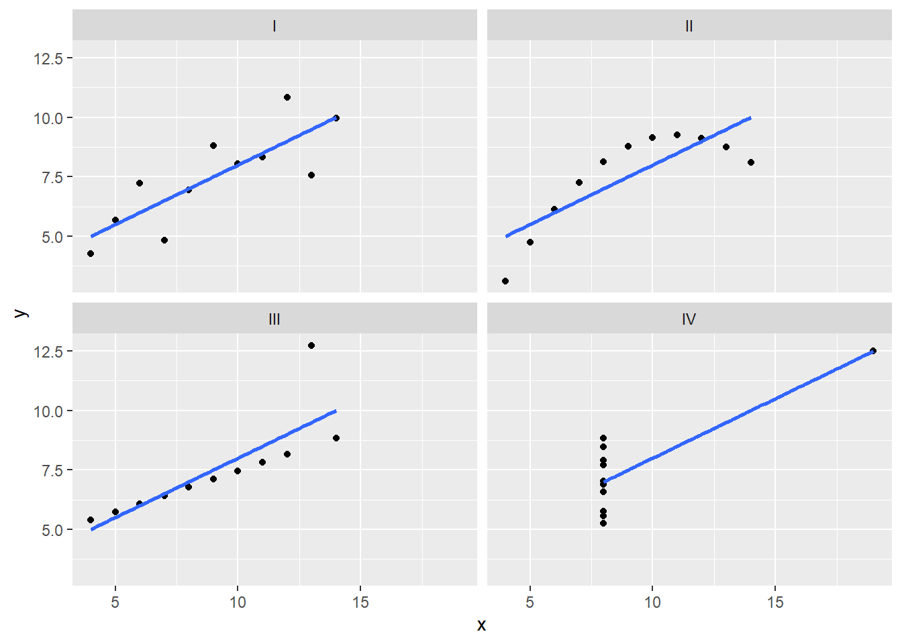
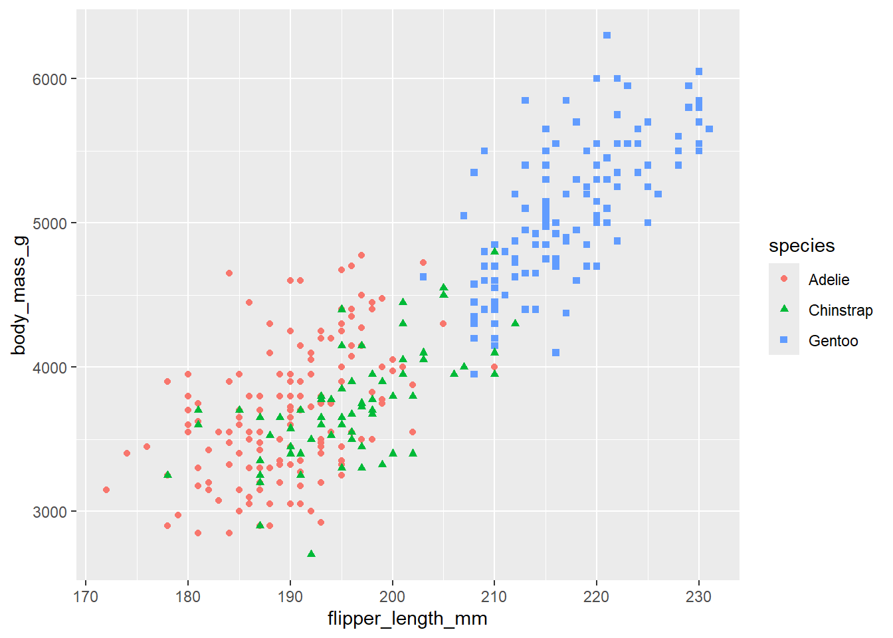
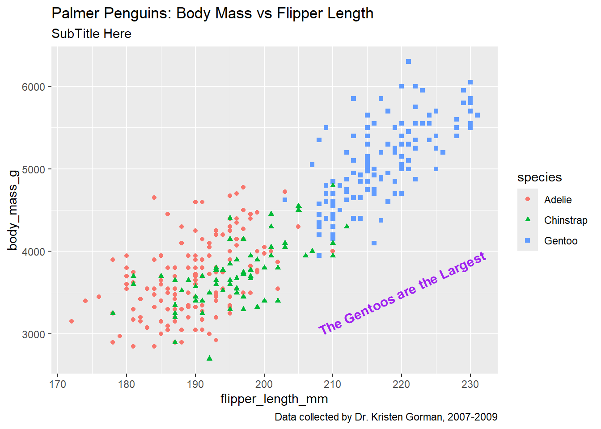

print("Hello, World!") # Welcome to my corner of the digi-verse.[1] "Hello, World!"print("Hello, World!") # Welcome to my corner of the digi-verse.[1] "Hello, World!"This document exists to
Practice using RStudio,
Practice using RMarkdown (both the style and file-type),
To document my process of learning R and create a future-reference resource, and
To preserve the best of my understanding and resources for my friends who are also learning R (now and in the future).
Checkout the RStudio RMarkdown Cheat Sheet, which I referenced while creating this document.
#Example:
Checkout the [RStudio RMarkdown Cheat Sheet](https://www.rstudio.com/wp-content/uploads/2015/02/rmarkdown-cheatsheet.pdf), which I referenced while creating this document.options(repos = c(CRAN = "https://cloud.r-project.org/"))If the following packages are not included this document will fail to stitch/knitt
# List of all packages to be installed
packages <- c(
"tidyverse",
"palmerpenguins",
"here",
"skimr",
"janitor",
"SimDesign",
"Tmisc",
"ggplot2"
)
# Install any packages that are not yet installed
install_if_missing <- function(p) {
if (!requireNamespace(p, quietly = TRUE)) {
install.packages(p)
}
}
# Apply the installation function to all packages
invisible(lapply(packages, install_if_missing))
# Load the libraries
lapply(packages, library, character.only = TRUE)── Attaching core tidyverse packages ──────────────────────── tidyverse 2.0.0 ──
✔ dplyr 1.1.4 ✔ readr 2.1.5
✔ forcats 1.0.0 ✔ stringr 1.5.1
✔ ggplot2 3.5.1 ✔ tibble 3.2.1
✔ lubridate 1.9.3 ✔ tidyr 1.3.1
✔ purrr 1.0.2
── Conflicts ────────────────────────────────────────── tidyverse_conflicts() ──
✖ dplyr::filter() masks stats::filter()
✖ dplyr::lag() masks stats::lag()
ℹ Use the conflicted package (<http://conflicted.r-lib.org/>) to force all conflicts to become errors
here() starts at C:/Users/dwolfe/Documents/Kootenai_County_Assessor_CodeBase-1
Attaching package: 'janitor'
The following objects are masked from 'package:stats':
chisq.test, fisher.test[[1]]
[1] "lubridate" "forcats" "stringr" "dplyr" "purrr" "readr"
[7] "tidyr" "tibble" "ggplot2" "tidyverse" "stats" "graphics"
[13] "grDevices" "utils" "datasets" "methods" "base"
[[2]]
[1] "palmerpenguins" "lubridate" "forcats" "stringr"
[5] "dplyr" "purrr" "readr" "tidyr"
[9] "tibble" "ggplot2" "tidyverse" "stats"
[13] "graphics" "grDevices" "utils" "datasets"
[17] "methods" "base"
[[3]]
[1] "here" "palmerpenguins" "lubridate" "forcats"
[5] "stringr" "dplyr" "purrr" "readr"
[9] "tidyr" "tibble" "ggplot2" "tidyverse"
[13] "stats" "graphics" "grDevices" "utils"
[17] "datasets" "methods" "base"
[[4]]
[1] "skimr" "here" "palmerpenguins" "lubridate"
[5] "forcats" "stringr" "dplyr" "purrr"
[9] "readr" "tidyr" "tibble" "ggplot2"
[13] "tidyverse" "stats" "graphics" "grDevices"
[17] "utils" "datasets" "methods" "base"
[[5]]
[1] "janitor" "skimr" "here" "palmerpenguins"
[5] "lubridate" "forcats" "stringr" "dplyr"
[9] "purrr" "readr" "tidyr" "tibble"
[13] "ggplot2" "tidyverse" "stats" "graphics"
[17] "grDevices" "utils" "datasets" "methods"
[21] "base"
[[6]]
[1] "SimDesign" "janitor" "skimr" "here"
[5] "palmerpenguins" "lubridate" "forcats" "stringr"
[9] "dplyr" "purrr" "readr" "tidyr"
[13] "tibble" "ggplot2" "tidyverse" "stats"
[17] "graphics" "grDevices" "utils" "datasets"
[21] "methods" "base"
[[7]]
[1] "Tmisc" "SimDesign" "janitor" "skimr"
[5] "here" "palmerpenguins" "lubridate" "forcats"
[9] "stringr" "dplyr" "purrr" "readr"
[13] "tidyr" "tibble" "ggplot2" "tidyverse"
[17] "stats" "graphics" "grDevices" "utils"
[21] "datasets" "methods" "base"
[[8]]
[1] "Tmisc" "SimDesign" "janitor" "skimr"
[5] "here" "palmerpenguins" "lubridate" "forcats"
[9] "stringr" "dplyr" "purrr" "readr"
[13] "tidyr" "tibble" "ggplot2" "tidyverse"
[17] "stats" "graphics" "grDevices" "utils"
[21] "datasets" "methods" "base" All of this is subject to change. I started writing these in .R and now I’m writing in RMarkdown. *
LearnR_StarterGuide.R - That’s where you are now
This will be links to Videos, Blogs, and Websites about R
This will be covering the very basic elements of R syntax, vocabulary, etc.
Learn_R_Packages_.R - Supplemental Information on important or interesting packages I find along the way.
Interesting - To create that list, I used an asterisk, which is what RMarkdown Cheat Sheet suggested. It didn’t take. When I wrote it in the Visual vs Source, using the buttons, and went back to the code, it showed a new format. This can happen when updates come through.
This is what I used:
# This is what I used:
* Learn_R_ref_Intro_to.R - That's where you are now
* Learn_R_ref_Resources.html - This will be links to Videos, Blogs, and Websites about R
* Learn_R_ref_Basics_of.R - This will be covering the very basic elements of R syntax, vocabulary, etc.
* Learn_R_4_Packages\_.R - Information on important or interesting packages I find along the way.
* Learn_R_ref_HowTo_TBC -This is what it was corrected to:
# This is what it was corrected to:
- Learn_R_ref_Intro_to.R - That's where you are now
- Learn_R_ref_Resources.html - This will be links to Videos, Blogs, and Websites about R
- Learn_R_ref_Basics_of.R - This will be covering the very basic elements of R syntax, vocabulary, etc.
- Learn_R_4_Packages\_.R - Information on important or interesting packages I find along the way.
- Learn_R_ref_HowTo_TBC -A quick side-note about ChatGPT/GPT-4 citations in this document.
If you (somehow) don’t already know what ChatGPT (or GPT-4) is, then I wanted to provide a quick note.
First (1st), periodically, I will be citing content provided by GPT-4. With a history in scholarship, I did not feel comfortable passing it off as my own. When I use GPT-4 to help me provide a summary or tutorial, I will cite that source directly.
As such, all citations of GPT-4 below are from OpenAI’s GPT-4 product. I have almost completely replace Google Searches with GPT-4 since I started using the ChatGPT in December 2022. While I still use Google, I use it less frequently as the days go by. The only reason I haven’t completely replace Google with GPT-4 is because it is not (currently 08/05/2023) tied live-to-internet. So for store hours, directions, recent events, etc., I still use Google.
Second (2nd), while I’ve used it to do tasks for me (like: “Strip this SQL Select list of comments and aliases, and provide it back in a comma delimited list of table.column” - so I can use them in a Group By list), I have not found that to be my primary use of GPT-4.
The real power of GPT-4 isn’t as a task-doer but as a tutor. I don’t want the code written for me, I want to understand the code and syntax. When I use GPT-4 as a tutor, I begin to understand the concepts and how to use them. I can take three things I know, and have a logical idea of what I want to accomplish, and have GPT-4 show me the syntax steps I was missing to finalize the outcome I’m working for. It works with SQL, Macros, DAX, and R (probably Python too, but I haven’t started Python yet, that’s next).
Below, you will see me asking GPT-4 to provide a summary. This mirrors how I use this as a tutor for teaching myself. Therefore, since I’m using it anyway, I decided to incorporate this into my guide, so anyone reading the guide can see how I use it effectively and adapt that for their own uses.
If you’re new to ChatGPT:
ChatGPT is OpenAI’s free version. GPT-4 is the paid upgrade. Go to “chat.openai.com”, create and account, and ask it “What can you do?”
Example: “In one complex sentence, explain what you are and how you can be used effectively.”
GPT-4: “I am ChatGPT, a state-of-the-art language model developed by OpenAI, based on the GPT-4 architecture, designed to understand and generate human-like text based on the input provided, and when used effectively, I can assist users in a myriad of tasks ranging from answering questions and providing explanations to creative writing and problem-solving.”
Example: “How can open a dataset in R, and plot the data?”
GPT-4:
“To open a dataset in R and plot the data, you’d typically follow these general steps:
Load necessary libraries: To handle data and plot it, you might want to use libraries like tidyverse which includes both ggplot2 for plotting and readr for reading data.
install.packages("tidyverse")
library(tidyverse)Import your dataset: Depending on the format of your dataset (e.g., CSV, Excel, RData), you’d use different functions. For a CSV file:
dataset <- read_csv("path_to_your_file.csv")Inspect your data: Before plotting, always take a moment to inspect your data to understand its structure.
head(dataset)Plot the data: With ggplot2, you can make a variety of plots. Here’s a simple scatter plot assuming you have variables named x and y:
Define: aes -> aesthetic ( visual property of an object)
ggplot(dataset, aes(x=x, y=y)) + geom_point() + theme_minimal()The above steps offer a very basic introduction. Both the process of importing data and creating plots have many nuances depending on the specifics of your dataset and the type of visualization you want to create. It would be helpful to consult the tidyverse and ggplot2 documentation for more detailed information. ”
On with our tutorial…
I’m creating this as I’m learning R through Coursera. For information on the course I’m taking to kick-off this project:
[Data Analysis with R Programming](https://www.coursera.org/learn/data-analysis-r/home/welcome) I will also be implementing strategies I find from any helpful resources, including the native help documentation, YouTube videos, TikTok posts, articles, and of course: GPT-4! I’ll link to anything I find that is useful.
One perfect example of a resource is the YouTube video: “Learn R in 39 minutes” by Equitable Equations. This video was comprehensive but not too long. The last portion of the video informed me about RMarkdown documents (which I’m using to write this now). Definitely subscribe to his channel.
With all that established, let’s get to learning R.
Learn R in 39 minutes by Equitable Equations
Data analysis using R (2021) by Danny Arends
R programming in one hour - a crash course for beginners by R Programming 101
Visualize your data using ggplot. R programming is the best platform for creating plots and graphs. by R Programming 101
To get started on this reference guide, I asked ChatGPT-4 to summarize.
The “R” in R programming doesn’t officially stand for anything. The language was named “R” by its creators, Ross Ihaka and Robert Gentleman, from the University of Auckland, New Zealand. It can be viewed as a play on their names’ initial letter.
However, the language is also considered as an implementation of the S programming language, so sometimes “R” is referred to as a sort of play on the name “S”.
S was created by John Chambers and colleagues at Bell Laboratories.
R has become a go-to language for statistical computing and graphics, widely used among statisticians and data analysts.”
IF you are reading this in RStudio Cloud / Posit Cloud or in GitHub or online in some way…but you want to use this reference guide to follow along and repeat the processes in your own, you will really want RStudio. While you can use RStudio Cloud/Posit Cloud, the native desktop environment is good to use and get used to.
If you are a GitHub user and you’re not reading this there, my profile is darrellwolfe, and my repository for this project is R_Analysis.
If you choose to download RStudio Desktop, you will want to install both:
R - That is the code and operating system information you need running in the background.
RStudio - That is the Graphic User Interface (GUI) that you will primarily interact with.
#### Download: [Download_R_And_RStudio_Here](https://posit.co/download/rstudio-desktop/)
# Inside a Doc.R document, use: Ctrl + (Mouse Left Click)print("RStudio")[1] "RStudio"To run code, place cursor in the same line as the code, press Ctrl+Enter (or, click “Run” icon at the top right of the .R docment box). Additionally, highlight multiple lines of code and then do either of the above.
In your session of RStudio (or RStudio Cloud) type:
To see which version of RStudio you are on, type ‘version’ (without the quotes) place cursor in the same line as the code, press Ctrl+Enter. You should get a result like this:
version _
platform x86_64-w64-mingw32
arch x86_64
os mingw32
crt ucrt
system x86_64, mingw32
status
major 4
minor 4.1
year 2024
month 06
day 14
svn rev 86737
language R
version.string R version 4.4.1 (2024-06-14 ucrt)
nickname Race for Your Life Here are the things you NEED to know to get started. This won’t be comprehensive, just an overview of the basic syntax, vocab, etc.
NOTE: MAC vs PC - I am going to say Ctrl+, if you use Mac, you know to use Command instead.
To run a command, place your cursor in the line of code (or highlight if multiple lines) B. Press Ctrl+Enter (or Command+Enter for Mac)
Except website links, for those [Ctrl+(Left Click with Mouse)]
Example:
print("Hello, World!") # Type this in your session, place your cursor on the line, Press Ctrl+Enter[1] "Hello, World!"This is based on the default layout, you can also move these around:
This text-box-area you may do most of your active writing within. You may have several files/windows open at once, writing code in each. You can have files/windows of different types (R, SQL, HTML, Text, VBA, etc.) open at once.
If you use Ctrl+F - a Find and Replace capability will work just like it does in Word or Excel.
If you run the following three in order, the “view” function will open a tab in this section of RStudio
library(tidyverse) # Cursor on this line, Press Ctrl+Enter
library("palmerpenguins") # Cursor on this line, Press Ctrl+Enter
view(penguins) # Cursor on this line, Press Ctrl+EnterBelow the Source is the “Console” area. Commands can be typed directly into the console too; however, they don’t get saved that way. Commands may give a Warning or Error, read those. Command outputs show in the console, that is its primary function.
NOTE: Commands ARE case sensitive library() and Library() are not the same.
Environment tab will tell you which libraries and datasets you have open (loaded)
History will tell you what you have been doing.
Connections will tell if you have a live connection to the database.
Git (if a GitHub project is loaded) is to create a new Project with an existing GitHub repo.
To do this: File > New Project > Version Control > Git (then paste link from GitHub)
To open an existing GitHub Project File > Open Project (navigate to the folder, click on the “NameOfFile.R” file) Tutorials - will walk you through the basics of R.
Lets you navigate all the files on your PC.
Note: You can import a .csv or .xls file from this section.
To do this: Navigate to the file from within the Files window, right click file, “Import”
Plots is where your visuals will appear once you create them.
Packages - Lists your packages, click the name to read about the package.
Help - Type a “?” in front of any command or name, run the command, info will appear in Help.


This shows datasets and values and stored values. If you set x <- 10, it will show that x equals ten.

My files are constantly evolving. Even since taking this screenshot last night, it changed. However, this is where you fill find all the files you have written. You can code in R, RMarkdown, SQL, Python, vba and others, and have them all linked to your GitHub code base.

Plots is where your visuals will appear once you have run them.

Optional but recommended. If you create a GitHub Repository, then link that repo to RStudio, you can push all your code to the cloud easily. This way, you can also recover it from anywhere and share it with others. This my R_Analysis repo here.

At its core, R is a place to build and run RStudio R code. However, RStudio has evolved to be a full-service code editor (R, SQL, Python, HTML, and more). I have grown to enjoy it more than Visual Studio.
Even more basic than R, RStudio can operate as a calculator.
Here are few intro to RStudio items that you can use right now on your own session just to get used to running commands or math in the editor.
1+1 #Now run this calculation, place cursor on this line and then Ctrl+Enter[1] 2Note: To assign a variable use (<-). While you can use (=), don’t for reasons I don’t fully understand yet.
x <- 10 #This assigns the variable, place cursor on this line and then Ctrl+Enter
10 * x #Now run this calculation, place cursor on this line and then Ctrl+Enter[1] 100GPT-4 on vectors: ” In R, a vector is a sequence of data elements of the same basic type. Members in a vector are officially called components. However, we will often use the term “elements” interchangeably.
There are two key points here:
The “c()” function in R is used to create vectors. The “c” stands for concatenate, which means to join or link things together in a chain or series.
Let’s take your example, c(10,1,5,60). This code is creating a vector in R with four elements: 10, 1, 5, and 60. This vector is of numeric type, meaning all elements are numbers.
You can assign this vector to a variable like this:
my_vector <- c(10,1,5,60)Now, my_vector holds your vector and you can use it in calculations, pass it to functions, etc. For example, if you want to calculate the sum of all elements in the vector, you would use the sum() function:
sum(my_vector)This would output 76, the sum of 10, 1, 5, and 60.
R has many functions to manipulate vectors, including mathematical operations, sorting, and statistical analysis. These are one of the basic data structures of R and fundamental to how it operates. ”
my_vector <- c(10,1,5,60) #Now run this calculation, place cursor on this line and then Ctrl+Enter
sum(my_vector) #Now run this calculation, place cursor on this line and then Ctrl+Enter[1] 76If you need to understand something or how a code works you can place a question mark in front of any code and run that. It will show up in your Help tab at the bottom right.
?print() #Now run this calculation, place cursor on this line and then Ctrl+Enter
?c() #Now run this calculation, place cursor on this line and then Ctrl+Enter
?library(tidyverse) #Now run this calculation, place cursor on this line and then Ctrl+EnterThere are thousands!
Packages are built either by Posit directly or by various third parties and users. One of the (if not the) first packages you will install is “tidyverse”, which has become an industry standard package, providing several functionalities that are used frequently.
Packages come with datasets, new functionality, and other items. In some rare cases, packages can come with conflicting functions (meaning two packages could assign the same name to different functions within the package), but most of this is circumvented by which library you have loaded.
On your machine, run the following:
install.packages(“tidyverse”) then Ctrl+Enter
You should see this:
install.packages("tidyverse") # You can place your cursor anywhere on this line and it would run in your RStudioTo see which packages are already installed, place cursor in the same line as the code, press Ctrl+Enter: installed.packages()
installed.packages() #Ctrl+Enter}
# Example The print out is long on installed.packages, but it will tell you every package you have on your system.

To install packages, place cursor in the same line as the code, press Ctrl+Enter: “tidyverse” is the first package you should install, it is one of the first everyone installs after the basic load-in.
install.packages("tidyverse")To load the library from installed packages, place cursor in the same line as the code, press Ctrl+Enter: This is your first installed library, you will use this often. More on that later.
library(tidyverse)Once packages are installed, they are on your machine unless you delete them. However, the individual functions of any given package won’t be available unless you load them into the current session. Consider each R file-type “Document_Name.R” to be a new blank slate.
Once you load the library, those functions and datasets are available to use within the session. This may be the first thing you want to do after naming your .R file.
You will load the packages you want to use by using “library”.
Note: CAPITAL vs lowercase matters in R. library() <is not equal to> Library()
Example:
Library(tidyverse) #Ctrl+Enter This probably gives you an error.vs
library(tidyverse) #Ctrl+Enter This probably works.library(tidyverse) #Ctrl+EnterTo change the appearance of your desktop, or theme do the following:
From the Tools menu at the top of the page, select “Global Options” at the bottom of the list.
From the left hand menu, select “Appearance”.
Select the editor themes until you find one you like.
Click Apply, then click OK to save.

In R, there are several different ways of viewing information within a dataset. If the set is small (Ex: five columns, fifteen rows), using view() or looking at it in a CSV or Excel works fine. But for most Data Analysts, the datasets will be large, hundreds, thousands, or even millions of rows of data. R gives us different options to understand the dataset we are working with, without loading it into an Excel sheet.
GPT-4 Summarizes:
Certainly! Here’s a short summary of options in R to view information about a dataset:
- dim(dataset): Returns the dimensions (number of rows and columns) of the dataset.
- colnames(dataset): Retrieves the column names of the dataset.
- rownames(dataset): Retrieves the row names of the dataset.
- summary(dataset): Provides a statistical summary of each column in the dataset.
- str(dataset): Displays the structure of the dataset including data types and the first few entries.
- head(dataset, n): Shows the first
nrows of the dataset (default is 6).- tail(dataset, n): Shows the last
nrows of the dataset (default is 6).- View(dataset): Opens the dataset in a spreadsheet-like viewer (RStudio specific).
- glimpse(dataset) (tidyverse): Offers a transposed version of
str(), making it more concise especially for datasets with many columns.- dplyr::tbl_sum(dataset) (tidyverse): Briefly summarizes the dataset, displaying its type and dimensions.
- skimr::skim(dataset): Produces a detailed summary of each variable including histograms (from the skimr package).
Each of these commands provides a different perspective on the dataset, helping the user to understand its structure, content, and key statistical properties.
The Pipe (%>%) is a way of passing data and variables through to the next command. Think of it as “and then”.
You can type this by holding Shift and then % > %, or you can use the hotkey in RStudio.
- Windows/Linux: Ctrl + Shift + M
- Mac: Cmd + Shift + M
This will add the pipe ( %>% ) automatically. We’ll be using piples more later, but an example is here below.
This is Week 3, Coursera, “Cleaning up with the basics” video content.
# Install these packages
install.packages("here")
install.packages("skimr")
install.packages("janitor")# Load these packages
library(tidyverse)
library(here)
library(skimr)
library(janitor)
# Install and load the practice dataset
install.packages("palmerpenguins")
library(palmerpenguins)
# Some ways to view data
skim_without_charts(penguins)
glimpse(penguins)
head(penguins)
select(penguins)
penguins %>% # passess this dataset into the following argument.
rename(island_new=island) # Changes the column name from "island" to "island_new"
# 1. give me the penguins dataset (and then %>% ) 2. rename this column.Getting a quick summary view of the data to understand quickly the answer to a question, such as, “What is the penguin type with the shortest flipper?
# Minimum is min
penguins %>%
drop_na() %>%
group_by(species, sex) %>%
summarise(min_flipper_length = min(flipper_length_mm))
# Alternatively, max
# summarise(max_flipper_length = max(flipper_length_mm))In SQL (and Excel Power Query), taking data from one column into two columns is called “Split”, which can be accomplished through Split by Delimiter or Split by Character.
In R, this is called “separate”.
seperate (employee, name, into=c('first_name','last_name'), sep=' |')
# Take the employee table, name column, separate/split that column into two columns using the space as a delimiter.Likewise, “Merge” in SQL or Excel Power Query is called “unite” in R.
unite(employee,'name',first_name,last_name,sep=' ')If you want to add a new column in R, you can use “mutate”.
mutate(body_mass_kg=body_mass_g/1000)
#This adds a new column that converts Kilograms to Grams.GPT-4 Explains:
When you create a new column in SQL by combining or performing some operation (like addition) on two or more existing columns, the new column is often referred to as a “derived column” or “computed column.” Here’s why:
Derived Column: This term is used to describe a column that is derived from one or more existing columns in a table. For instance, if you’re selecting from a table and you want to add together the values of two columns for your result set, the resulting column would be a derived column.
Computed Column: This term is often used in the context of adding a new permanent column to a database table where the values are computed based on other columns. In some database systems, you can actually create computed columns that will automatically update their values based on the values of other columns.
Here’s a simple example of creating a derived column using SQL:
SELECT first_name, last_name, salary, bonus, (salary + bonus) AS total_compensation FROM employees;In this example,
total_compensationis a derived column that adds thesalaryandbonuscolumns together.Remember that the terminology might vary slightly based on context or the specific database platform. The most general term for such operations would be “derived column.”
In R, there is a bias() function that helps to see if there is any bias in the data. The lower the result, the less bias is present.
“When we run this we find out that the result Is 0.71. That’s pretty close to zero but the prediction seemed biased towards lower temperatures which, means they aren’t as accurate as they could be. And now that the local weather channel knows about this, they can find the problem in their system that’s causing biased predictions. This doesn’t mean that their predictions will be perfect all the time, but they’ll be more accurate overall.”
install.packages("SimDesign")Warning: package 'SimDesign' is in use and will not be installed# Example
library(SimDesign)
actual_temp <- c(68.3, 70 ,72.4, 71, 67, 70)
predicted_temp <- c(67.9, 69, 71.5, 70, 67, 69)
bias(actual_temp, predicted_temp)[1] 0.7166667clean_names(penguins) # What does this actually do?penguins %>% arrange(body_mass_g)
head(penguins)install.packages('Tmisc')Warning: package 'Tmisc' is in use and will not be installedlibrary(tidyverse)
library(Tmisc)
data(quartet)
# View(quartet) # Use View to see the table.
quartet %>%
group_by(set) %>%
summarise(mean(x), sd(x), mean(y), sd (y), cor(x,y))# A tibble: 4 × 6
set `mean(x)` `sd(x)` `mean(y)` `sd(y)` `cor(x, y)`
<fct> <dbl> <dbl> <dbl> <dbl> <dbl>
1 I 9 3.32 7.50 2.03 0.816
2 II 9 3.32 7.50 2.03 0.816
3 III 9 3.32 7.5 2.03 0.816
4 IV 9 3.32 7.50 2.03 0.817# Mean Averages are similar
# Standard Deviation (sd), the standard deviation is similar in both sets , x & y
# Correlation for each set, the correllation seems similar.ggplot(quartet, aes(x,y)) + geom_point() + geom_smooth(method=lm,se=FALSE) + facet_wrap(~set)`geom_smooth()` using formula = 'y ~ x'
# Taking the above summary, and then visualizing the data may tell a story that the numbers themslves did not. In this section, we take the Palmer Penguins dataset, and plot it using ggplot2. See also, the ggplot2 Cheat Sheet.
Coursera: How to work with “ggplot2”
Start with the ggplot function and choose a dataset to work with.
Add a geom_ function to display your data.
Map the variables you want to plot in the arguments of the aes() function.
Install.packages
install.packages("ggplot2")Warning: package 'ggplot2' is in use and will not be installedinstall.packages("palmerpenguins")Warning: package 'palmerpenguins' is in use and will not be installedLoad libraries
library(ggplot2)
library(palmerpenguins)View the dataset:
data("penguins")
View(penguins)Explained:
ggplot(data = penguins) + geom_point(mapping = aes(x = flipper_length_mm, y = body_mass_g))
ggplot(data = penguins) - Creates the coordinate system to add layers on.
geom_point() - Scatterplot vs goem_bar - bar chart - “A geom is the geometric object used to represent your data. In this case, the function geom_point() tells R to represent your data with points. The ggplot() function creates a coordinate system that you can add layers to. The first argument of the ggplot() function is the dataset to use in the plot. In this case, it’s ”penguins.”” - Coursera, Week 4, Hands-On Activity
(mapping = aes(x=,y=)) - What figures to place where on vizualization.
aes(): “In the ggplot2 package of R, the function aes() stands for”aesthetic mappings.” When you’re using ggplot2 to create visualizations, you often use aes() to map variables in your data to visual properties (or “aesthetics”) of the plot, such as the x and y position, color, size, shape, etc.” GPT-4
ggplot(data = penguins) +
geom_point(mapping = aes(x = flipper_length_mm, y = body_mass_g))Warning: Removed 2 rows containing missing values or values outside the scale range
(`geom_point()`).
Adding layers to this plot:
library(ggplot2)
library(palmerpenguins)
ggplot(data = penguins) +
geom_point(mapping = aes(x = flipper_length_mm, y = body_mass_g, color=species, shape = species)) # , size = species This made it worse but was an option.Warning: Removed 2 rows containing missing values or values outside the scale range
(`geom_point()`).
We can add:
Title - Bold top of visualization
Subtitle - Smaller below title
Caption - below graph
Annotation - Label inside graph
library(ggplot2)
library(palmerpenguins)
ggplot(data = penguins) +
geom_point(mapping = aes(x = flipper_length_mm, y = body_mass_g, color=species, shape = species)) +
labs(title = "Palmer Penguins: Body Mass vs Flipper Length", subtitle = "SubTitle Here", caption = "Data collected by Dr. Kristen Gorman, 2007-2009") +
annotate("text",x=220,y=3500,label="The Gentoos are the Largest", color = "purple",fontface = "bold", size=4.0, angle=25)Warning: Removed 2 rows containing missing values or values outside the scale range
(`geom_point()`).
Type anything you want (letters before numbers) followed by the assignment (<-) and place the ggplot after this. Than you can add things to the variable.
library(ggplot2)
library(palmerpenguins)
p <- ggplot(data = penguins) +
geom_point(mapping = aes(x = flipper_length_mm, y = body_mass_g, color=species, shape = species)) +
labs(title = "Palmer Penguins: Body Mass vs Flipper Length", subtitle = "SubTitle Here", caption = "Data collected by Dr. Kristen Gorman, 2007-2009")
psaved <- p + annotate("text",x=220,y=3500,label="The Gentoos are the Largest", color = "purple",fontface = "bold", size=4.0, angle=25)In the Plots tab in RStudio, you can export the images (png, jpg, etc.) to a specified location.
Alternatively, you can use ggsave("Title.png") and it will automatically save this to your RStudio Files.
library(ggplot2)
library(palmerpenguins)
p <- ggplot(data = penguins) +
geom_point(mapping = aes(x = flipper_length_mm, y = body_mass_g, color=species, shape = species)) +
labs(title = "Palmer Penguins: Body Mass vs Flipper Length", subtitle = "SubTitle Here", caption = "Data collected by Dr. Kristen Gorman, 2007-2009")
psaved <- p + annotate("text",x=220,y=3500,label="The Gentoos are the Largest", color = "purple",fontface = "bold", size=4.0, angle=25)
ggsave("Three Penguins.png")Saving 7 x 5 in imageWarning: Removed 2 rows containing missing values or values outside the scale range
(`geom_point()`).GPT-4: “Certainly! In the ggplot2 package in R, visualization is built up through layers, allowing users to iteratively add elements to their plots. Let’s go through each of the items you listed:
facet_wrap(~variable, nrow = , ncol = ): It wraps a 1D sequence of panels into a 2D grid.facet_grid(rows = ~variable1, cols = ~variable2): It creates a 2D grid of panels. You can facet by a variable on rows and/or columns.R library(ggplot2) ggplot(mpg, aes(x=displ, y=hwy)) + geom_point() + facet_wrap(~class, nrow=2)geom_smooth() function adds a smoothed line (typically a regression line) to a scatter plot, helping to show trends or patterns in the data. By default, if the dataset is large, it uses a method called ‘loess’ (locally estimated scatterplot smoothing). For smaller datasets or for categorical x-axis, it will compute a linear model.method argument.R ggplot(mpg, aes(x=displ, y=hwy)) + geom_point() + geom_smooth()alpha argument can be set in most geoms to adjust transparency.R ggplot(mpg, aes(x=displ, y=hwy)) + geom_point(alpha=0.5) In this example, points in the scatter plot will be semi-transparent.These are just basic overviews of each concept. The flexibility and power of ggplot2 allow for much deeper customization and control over visualizations.”
library(ggplot2)
library(palmerpenguins)
p <- ggplot(data = penguins) +
geom_point(mapping = aes(x = flipper_length_mm, y = body_mass_g, color=species, shape = species, alpha=0.5)) +
labs(title = "Palmer Penguins: Body Mass vs Flipper Length", subtitle = "SubTitle Here", caption = "Data collected by Dr. Kristen Gorman, 2007-2009")
psaved <- p + annotate("text",x=220,y=3500,label="The Gentoos are the Largest", color = "purple",fontface = "bold", size=4.0, angle=25) +
facet_wrap(~species, nrow=2)
# ggsave("Three Penguins.png")TEXT
TEXT
TEXT
TEXT
TEXT
TEXT
TEXT
TEXT
TEXT
TEXT
TEXT
2. COMMENTS
The hash-tag/number sign (#) is a comment marker, R ignores everything after Comments #